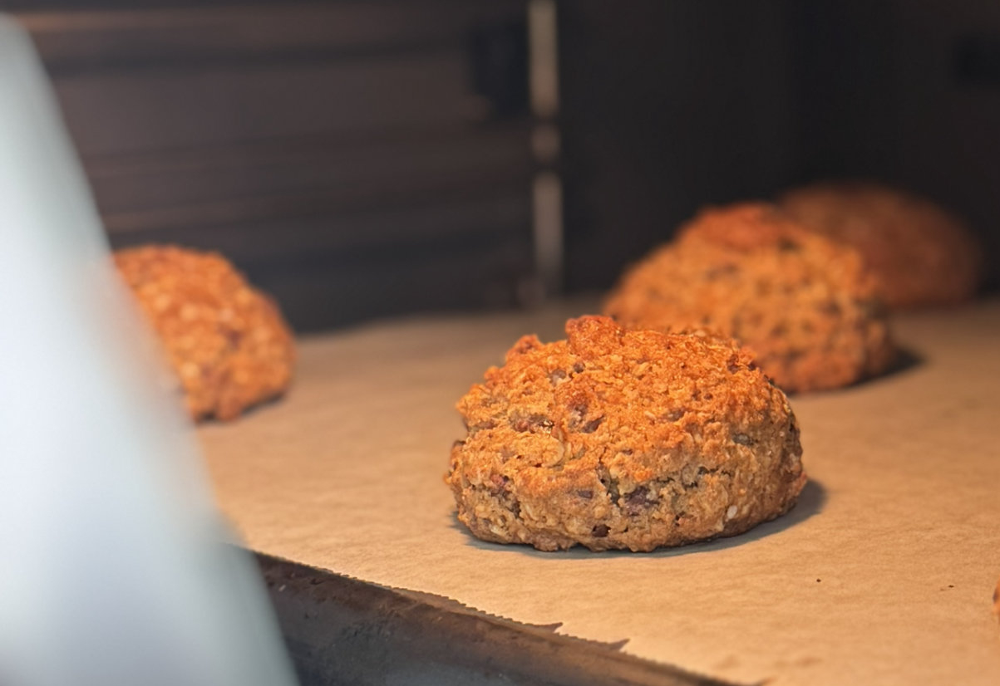

+ Nieuwe datum
Meer markten volgen
Volg ons op Instagram voor de nieuwste locaties en tijden.

BOVEN begon met het soort baksels dat we zelf willen eten en met liefde uitdelen.
Wij zijn BOVEN!
Gina en Kelly, twee vriendinnen met een gedeelde liefde voor bakken. Voor ons is bakken meer dan alleen iets lekkers maken. Het is een manier om ons hoofd leeg te maken, met onze handen bezig te zijn en even helemaal in het moment te leven. Juist in een wereld waarin we zoveel achter schermen zitten.
Het plezier van creatief bezig zijn, nieuwe baksels bedenken en deze delen met de mensen om ons heen groeide al snel uit tot iets groters. De enthousiaste reacties en de aanhoudende vraag naar meer gaven ons het vertrouwen om onze hobby verder te brengen.
Wat begon als het idee om een kamer boven in huis om te toveren tot onze eigen bakplek, groeide uit tot de droom om onze liefde voor bakken met veel meer mensen te delen. De naam BOVEN is gebleven en voelt voor ons als thuiskomen: een plek waar je even de tijd neemt om te genieten.
Bij BOVEN willen we een stukje comfort bieden, waarbij aandacht en ambacht voorop staan. We bakken in kleine hoeveelheden en nemen de tijd om aandacht te besteden aan smaak, textuur en dat huisgemaakte gevoel. Binnenkort vind je ons op markten, fairs en andere fijne plekken in en rond Apeldoorn. We hopen je daar te zien!
Cookies, cakes en meer
Onze cakes hebben een standaard doorsnede van 10 centimeter, wat betekent dat 2-6 personen er van kunnen genieten (afhankelijk van de porties). Op dit moment nemen wij alleen afhaalbestellingen aan. Wil je een andere maat bestellen, of heb je vragen over allergenen of ingrediënten? Neem gerust contact met ons op om te overleggen over de mogelijkheden!
Kom iets lekkers halen
Volg ons op Instagram voor de nieuwste locaties en tijden.
Wil je weten waar we binnenkort staan, een bestelling plaatsen, een vraag stellen over het assortiment of wil je BOVEN uitnodigen voor een markt of fair?